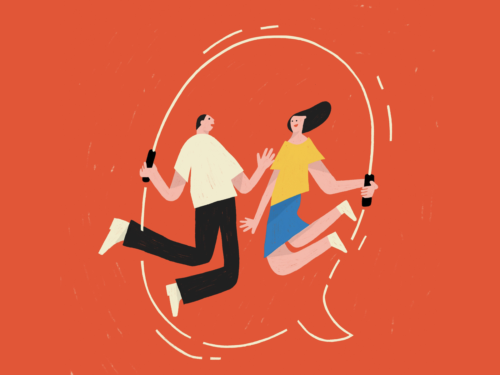

设计周刊 Design Weekly #04
Thu, Apr 23, 2020
🏷 设计亮点：
Spotify 插图
这套插画在暗黑模式下表现力不错，配色使用的冷色调的相近色，
🏷 设计资源：
可爱的人用可爱的字体 Hunny Bummy
Hunny Bummy 是一款兔子主题的俏皮字体，包含 150 多个字符和80 多个字形。
🏷 设计新闻：
简·奥斯汀故居博物馆品牌视觉重塑，由Pentagram操刀
五角设计公司 Pentagram 合伙人兼平面设计师 Domenic Lippa 为简·奥斯汀故居博物馆操刀品牌视觉重塑。新的品牌标识旨在更好地体现简·奥斯丁故居博物馆的特色。设计团队将其名称简化为「简·奥斯丁的房子（Jane Auste’s House）」，并以房屋空间本身为灵感设计了形象。新标志的手写字符 A，是以 1815 年奥斯丁写给侄女安娜的一封信中的字母为蓝本，结合了字母 J 和 A，以优雅、程式化的字母组合，给人一种现代但装饰性的感觉。
🏷 设计文章
设计师如何讲故事？
学着为自己的设计发声，让它与听众引起共鸣。讲好故事的 5 个步骤： 1.开始（背景） 2.冲突（问题） 3.情节（解决问题的过程） 4.高潮（设计策略） 5.行动和结果（如何解决问题，解决过程是什么）
by

🏷 官方羊毛真的香
吉卜力工作时的免费壁纸
官方 IP 来发福利了，宫崎骏的《风之谷》、《幽灵公主》、《千与千寻》、《哈尔的移动城堡》、《悬崖上的金鱼姬》、米林宏昌的《借东西的小人阿莉埃蒂》、以及高畑勋《辉夜姬物语》… 选择困难症又犯了~